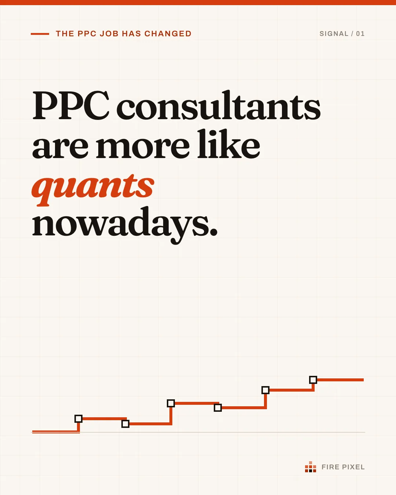

Your CRM knows which leads were good. Google Ads should too.
I map calls, forms, WhatsApp and CRM outcomes, preserve eligible identifiers, give different outcomes defensible values, and verify the system every week. Google does the auction-time bidding. I improve the business signal it is allowed to learn from.
Trust the bidder. Verify the inputs. Best suited to UK and Irish businesses spending £5,000 or more a month on Google Ads.
Lead generation management Run the free signal scan
Three symptoms this fixes
Google reports conversions, but sales have fallen
Your primary bidding goal may treat very different outcomes as equivalent, so the platform cannot use the later commercial distinction.
Calls look strong, but nobody knows which ones sold
Call duration is standing in for call quality. If both calls pass the threshold, a booked job and a wrong number can be reported as the same conversion.
Your CRM has the answer, but Google is not receiving it
The bidding keeps learning from forms and thirty-second calls instead of customers and revenue.
The Qualified Lead Loop
- Capture every lead route and preserve eligible advertising identifiers for forms, calls from ads, WhatsApp and chat.
- Qualify it against CRM outcomes, call scoring and your commercial rules. Junk stops here.
- Value it from close rate, margin or actual revenue, so the bidder knows what each outcome is worth.
- Return eligible qualified outcomes to Google, then verify the whole system weekly: the machine flags, I decide.
Then it goes round again. That is the product. See what ongoing Google Ads management includes, what happens in the first 90 days and where setup is scoped separately.
Start with the evidence a public page can show
The free Google Ads Signal Plan inspects up to two public pages, available published GTM code and a fresh pre-consent browser trace for advertising and analytics tags, forms, phone routes and consent signals. It labels what was observed and what still needs consent interaction or account access. No email address is required.
It cannot prove that a tag fired or that an outcome reached Google. That boundary is the point: public evidence first, account claims second.
Scan the visible signal pathA worked example
A form closes at 15 per cent and produces £400 of contribution when it closes. Its expected value is £60. A qualified phone call closes at 45 per cent, so its expected value is £180.
Count both as one conversion and the bidding goal does not express their commercial difference. Give them evidence-based values and a value strategy can use that distinction. That is a better instruction than counting both as one.
Evidence, without pretending every account is identical
No case study can guarantee your result: businesses, margins, auctions and sales processes differ. But you should still expect evidence that the system has been implemented and works.
A travel lead-generation business: scoring every lead with an LLM before upload and returning only qualified outcomes as offline conversions coincided with cost per qualified lead moving from about €50 to €20-30 over the comparison period. The lead definition stayed constant and the feedback gate changed, but this was not a controlled incrementality test.
A UK ecommerce business: historical first-order characteristics showed a useful relationship with later customer value in its warehouse data, so validated segments informed reporting and audience inputs. That is an account-specific model that needs continued out-of-sample checks.
Before an engagement I can show anonymised conversion-value calculations, QA records, upload logs and an example weekly exception report. Client references are available on request. These show whether the system was implemented; they do not guarantee that another account will produce the same result. You can also hand the published method to an AI and ask it to find the weaknesses. The site's own use of AI is covered in the AI disclosure.
How the work is organised
Management is split into two products because a qualified enquiry and a profitable order need different evidence, economics and weekly checks.
Lead generation management
Calls, forms and CRM outcomes captured, qualified, valued and returned to Google, with the signal and account checked every week.
Read more →Ecommerce management
Merchant Center feeds, brand and non-brand, new and returning customers, and product margin managed against transactions and order lines.
Read more →Lead generation capabilities
The pages below describe the capabilities used to build and maintain the Qualified Lead Loop.
Capture
Map every lead route and preserve eligible advertising identifiers: forms, calls from ads, WhatsApp and chat. Where no click ID exists, report the gap instead of inventing a match.
Read more →Value
Lead quality, close rates, margin and CRM outcomes translated into conversion values the bidder can actually use. Derived from your economics, not a hunch.
Read more →Control
Google bids on the right signal. A warehouse checks the numbers weekly, the system flags what moved, and I approve every change before it stands.
Read more →The full toolbox sits underneath: call tracking, CRM feedback, values from unit economics, the warehouse, tracking, landing pages, automation, API management and Microsoft Ads Vouchers. Running ecommerce rather than lead generation? See ecommerce Google Ads management, where Merchant Center, order lines and product margin replace calls and CRM lead stages.
Who this suits
Both management products are designed for businesses spending about £5,000 or more a month, with enough outcomes to evaluate a change. Lead generation needs a maintained record of what happened after the enquiry. Ecommerce needs reliable orders, order lines, refunds, products and customer status.
You do not need perfect data. You do need someone who can explain the commercial outcome, maintain the fields the system depends on and allow the measurement definition to change when it is wrong.
It is not a fit if nobody records outcomes, the volume is too low to read, the business will not share enough information to derive a value, or the buyer wants guaranteed short-term performance or unattended software changing the account.
Smaller and uncertain accounts can start with the free signal scan or the fixed-fee diagnostic.
Who runs it
Fire Pixel is me, Ben Luong: 20+ years across data, analytics, lead generation and paid media. The system does the repetitive checks; I make every decision that reaches the account, and there is a hard cap on how many accounts I run. More about how I work.
Pricing
Management starts at £1,000 a month or 10 per cent of media spend, whichever is higher. Setup is scoped separately after I map the existing lead or order flow. The initial term is three months, followed by rolling monthly management.
Smaller accounts can start with a fixed-fee diagnostic. Landing pages, tracking repairs and warehouse work can also be scoped as contained projects. See pricing and ways to work.
Discuss management